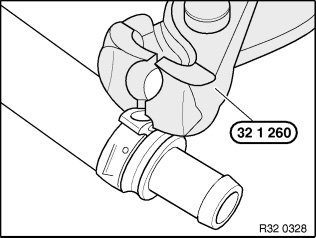
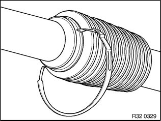
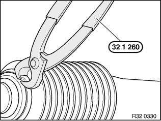
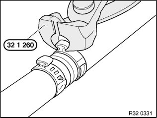
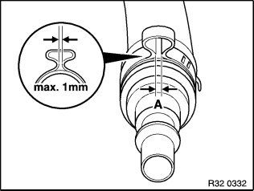

32 41 ... Instructions For Removing and Installing Ear Clips
32 41 ... Instructions for removing and installing ear clipsSpecial tools required:
Note:
The work steps are show on assorted components.
Ear clip must always be replaced.

To remove an ear clip, place special tool 32 1 260 at right angles to ear and cut ear open.

The ear clip can be fitted not only axially but also radially after the hook fastener has been opened.

Attach hook fastener and press ear together with special tool 32 1 260.

The diagonal cutting pliers of special tool 32 1 260 can be used in areas which are difficult to access.

Important!
Gap (A) max. 1 mm!